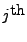

Next: Pharmacokinetic Model Specification ($SUBROUTINE)
Up: Model Specification via the
Previous: Controlling the Calling Frequency
Contents
Because NM-TRAN makes a first-order approximation for the
intraindividual error model during population level
estimation2,
the corresponding SPK models generated by ASPK will do the same.
To be specific, let the model for
the  value of the  individual's data
be expressed as the following functional:
individual's data
be expressed as the following functional:
where
is the mean or expected value
for the data,
is a vector of known quantities for the individual
such as times and covariates,
is a vector of fixed effects parameters,
is the individual's vector of random effects parameters,
and  is a vector of random variables that appears in
NONMEM'S intraindividual error model.
For a complete description of the models used at the population
level by SPK and NONMEM, see Appendix C.
is a vector of random variables that appears in
NONMEM'S intraindividual error model.
For a complete description of the models used at the population
level by SPK and NONMEM, see Appendix C.
During population level estimation this functional is approximated by
Define the derivative of the functional evaluated at
as
Then, the covariance of the and values of
the individual's data is given by
This corresponds to in SPK notation.
If the intraindividual error model can be expressed in traditional
NONMEM form,
then
and there is no difference between the approximate and exact
intraindividual error models.
If the intraindividual error model is not linear
in  , however, the two forms are not equal.
For example, in the case of an exponential error model with a single
component,
, however, the two forms are not equal.
For example, in the case of an exponential error model with a single
component,
which implies that
and the intraindividual error models are therefore different.
Note that as a result of this first-order approximation
an exponential model is equivalent to a constant
coefficient of variation (CCV) model during population level
estimation.
Next: Pharmacokinetic Model Specification ($SUBROUTINE)
Up: Model Specification via the
Previous: Controlling the Calling Frequency
Contents
Mitch Watrous
2007-12-17